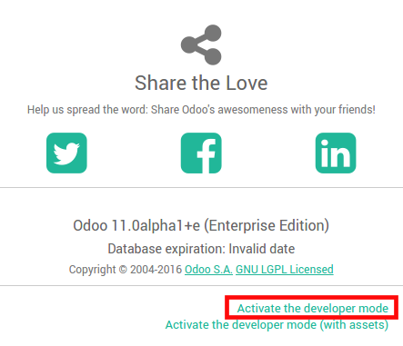

This document is mainly dedicated to Odoo on-premise users who don't benefit from an out-of-the-box solution to send and receive emails in Odoo, unlike Odoo Online & Odoo.sh.
If no one in your company is used to manage email servers, we strongly recommend that you opt for those Odoo hosting solutions. Their email system works instantly and is monitored by professionals. Nevertheless you can still use your own email servers if you want to manage your email server's reputation yourself.
You will find here below some useful information on how to integrate your own email solution with Odoo.
Note
Office 365 email servers don't allow easiliy to send external emails from hosts like Odoo. Refer to the Microsoft's documentation to make it work.
How to manage outbound messages
As a system admin, go to and check External Email Servers. Then, click Outgoing Mail Servers to create one and reference the SMTP data of your email server. Once all the information has been filled out, click on Test Connection.
Here is a typical configuration for a G Suite server.
Then set your email domain name in the General Settings.
Can I use an Office 365 server
You can use an Office 365 server if you run Odoo on-premise. Office 365 SMTP relays are not compatible with Odoo Online.
Please refer to Microsoft's documentation to configure a SMTP relay for your Odoo's IP address.
How to use a G Suite server
You can use an G Suite server for any Odoo hosting type. To do so you need to enable a SMTP relay and to allow Any addresses in the Allowed senders section. The configuration steps are explained in Google documentation.
Be SPF-compliant
In case you use SPF (Sender Policy Framework) to increase the deliverability of your outgoing emails, don't forget to authorize Odoo as a sending host in your domain name settings. Here is the configuration for Odoo Online:
- If no TXT record is set for SPF, create one with following definition: v=spf1 include:_spf.odoo.com ~all
- In case a SPF TXT record is already set, add "include:_spf.odoo.com". e.g. for a domain name that sends emails via Odoo Online and via G Suite it could be: v=spf1 include:_spf.odoo.com include:_spf.google.com ~all
Find here the exact procedure to create or modify TXT records in your own domain registrar.
Your new SPF record can take up to 48 hours to go into effect, but this usually happens more quickly.
Note
Adding more than one SPF record for a domain can cause problems with mail delivery and spam classification. Instead, we recommend using only one SPF record by modifying it to authorize Odoo.
Allow DKIM
You should do the same thing if DKIM (Domain Keys Identified Mail) is enabled on your email server. In the case of Odoo Online & Odoo.sh, you should add a DNS "odoo._domainkey" CNAME record to "odoo._domainkey.odoo.com". For example, for "foo.com" they should have a record "odoo._domainkey.foo.com" that is a CNAME with the value "odoo._domainkey.odoo.com".
How to manage inbound messages
Odoo relies on generic email aliases to fetch incoming messages.
- Reply messages of messages sent from Odoo are routed to their original discussion thread (and to the inbox of all its followers) by the catchall alias (catchall@).
- Bounced messages are routed to bounce@ in order to track them in Odoo. This is especially used in Odoo Email Marketing to opt-out invalid recipients.
Original messages: Several business objects have their own alias to create new records in Odoo from incoming emails:
- Sales Channel (to create Leads or Opportunities in Odoo CRM),
- Support Channel (to create Tickets in Odoo Helpdesk),
- Projects (to create new Tasks in Odoo Project),
- Job Positions (to create Applicants in Odoo Recruitment),
- etc.
Depending on your mail server, there might be several methods to fetch emails. The easiest and most recommended method is to manage one email address per Odoo alias in your mail server.
- Create the corresponding email addresses in your mail server (catchall@, bounce@, sales@, etc.).
Set your domain name in the General Settings.

- If you use Odoo on-premise, create an Incoming Mail Server in Odoo for each alias. You can do it from the General Settings as well. Fill out the form according to your email provider’s settings. Leave the Actions to Perform on Incoming Mails blank. Once all the information has been filled out, click on TEST & CONFIRM.
- If you use Odoo Online or Odoo.sh, We do recommend to redirect incoming messages to Odoo's domain name rather than exclusively use your own email server. That way you will receive incoming messages without delay. Indeed, Odoo Online is fetching incoming messages of external servers once per hour only. You should set redirections for all the email addresses to Odoo's domain name in your email server (e.g. catchall@mydomain.ext to catchall@mycompany.odoo.com).
Tip
All the aliases are customizable in Odoo. Object aliases can be edited from their respective configuration view. To edit catchall and bounce aliases, you first need to activate the developer mode from the Settings Dashboard.
Then refresh your screen and go to to customize the aliases (mail.catchall.alias & * mail.bounce.alias*).

Note
By default inbound messages are fetched every 5 minutes in Odoo on-premise. You can change this value in developer mode. Go to and look for Mail: Fetchmail Service.